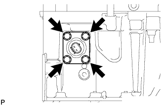

ДАТЧИК УРОВНЯ МАСЛА > СНЯТИЕ |
| 1. СНИМИТЕ НИЖНЮЮ НАКЛАДКУ ПЕРЕДНЕГО БАМПЕРА |
Освободите фиксатор, выверните 5 болтов и снимите нижнюю облицовку переднего бампера.
| 2. СНИМИТЕ ЗАЩИТУ КАРТЕРА ДВИГАТЕЛЯ № 1 В СБОРЕ |
Выверните 4 болта.
 |
Отсоедините защиту картера двигателя от кузова автомобиля, как показано на рисунке.
| 3. СНИМИТЕ ЗАДНЮЮ НИЖНЮЮ КРЫШКУ ДВИГАТЕЛЯ В СБОРЕ |
Выверните 4 болта и снимите заднюю защиту картера двигателя.
| 4. СЛЕЙТЕ МОТОРНОЕ МАСЛО |
Снимите крышку маслоналивной горловины.
Снимите пробку сливного отверстия масляного поддона и слейте моторное масло в резервуар.
Установите новую прокладку и пробку сливного отверстия масляного поддона.
| 5. СНИМИТЕ ДАТЧИК УРОВНЯ МОТОРНОГО МАСЛА |
Отсоедините разъем.
|  |
Выверните 4 болта и снимите датчик.
Срежьте часть прокладки и снимите прокладку с датчика уровня моторного масла.